|
National Center for
Khmer Ceramics Revival (NCKCR)
The National Center for Khmer Ceramics Revival (NCKCR) is aimed
at the revival of Cambodian ceramics.
The NCKCR is
a non-profit and non-governmental organization aiming to rediscover
and reintroduce Khmer ancestral pottery techniques and support the
development of contemporary Khmer ceramic art. In the process, NCKCR
creates economic opportunities, helping to decrease poverty in Cambodia.
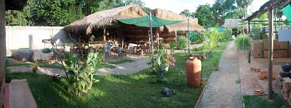
Serge Rega established NCKCR in Siem Reap-Angkor, renowned for
the Angkor temples. Tourists abound, creating substantial incomes,
but paradoxically Siem Reap remains one of the poorer provinces
of Cambodia. Siem Reap is emerging as a developed city, but geographically,
poverty is displaced by about only 2 kilometers.
NCKCR is involved in Vocational training, which helps the poor
rural population and will decrease poverty. Training is provided
free of charge. Students are given an allowance to compensate for
'lost' time, which would otherwise be spent earning a living. Vocational
training includes working with clay, but also technical skills,
such as building a potter’s wheel, a kiln, tools etc. A student
finishing a vocational training session with NCKCR must be able
to establish his/her own studio. After training, students may be
hired by NCKCR, or NCKCR may provide help to the young potter to
install a studio.
| 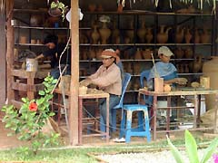 |
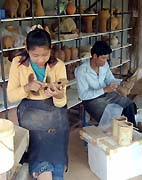 |
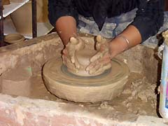 |
| Vocational training |
All crafts are hand made |
Vocational training |
| 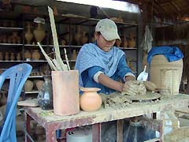 |
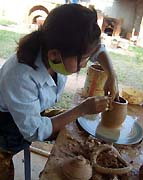 |
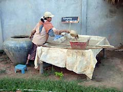 |
| Vocational training |
Throwing on the potter's wheel |
Cleaning & sieving clay |
Serge Rega says “rural workshops will help the poor and will
allow women to express themselves, play a role in society and become
participants in an economic activity”. The first rural workshop
will be installed in August 2007 in Koh Ker (80 km north-east of
Siem Reap) in collaboration with Heritage Watch NGO. A second rural
workshop will be installed in May 2008 in Pouk Area, 30 km west
of Siem Reap. Rural studios will provide economic assistance for
poor peoples but will also play a role in the prevention of looting
of Khmer Archaeological sites.
Research on Khmer Antique glazing and techniques - Antique Khmer
ceramics are renowned, but the technology was lost during the recent
terrible upheavals in Cambodia. NCKCR has sought to rediscover this
technology, researching antique Khmer glazing, bisque, kilns, potters
language etc. NCKCR wants to soon start the construction of an antique
Khmer kiln (Dragon kiln). A first firing is scheduled for December
2007-January 2008. It will be the first time in 500 years such a
kiln will be fired in Cambodia - a 10 day and night event. We will
make this an international event, in order to facilitate exchange
with potters from all around the world. For many years international
potters have had exchanges with each other. Khmer potters rarely
have the opportunity to travel outside of Cambodia to meet their
peers, so this meeting will be held in Cambodia at the NCKCR. The
kiln will allow us to fire our reconstituted antique Khmer glaze
under the same conditions that it was made in Angkor. Such a kiln
is a major tool in the research of antique Khmer techniques.
| 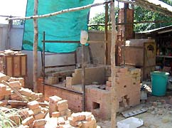 |
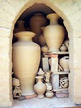 |
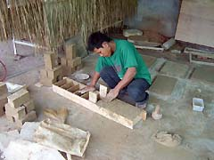 |
| Construction Bourry box Kiln |
Before firing (1500 litre kiln) |
Refractory bricks for antique kiln |
| 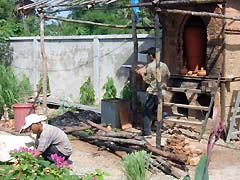 |
|
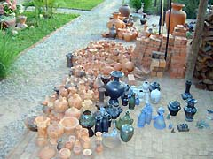 |
| Unloading |
|
Unloading |
Revival of contemporary Khmer Ceramic Arts - NCKCR has rediscovered
ancestral techniques, which it now teaches. When this knowledge
is established, students are encouraged to develop contemporary
Khmer ceramic art, with the support of a French volunteer designer.
Contemporary Khmer ceramic art consists of stoneware, salt-glazed
wares and raku. Different technologies will be used in the future.
Fight against illicit trade of Khmer Antiques - Looting of archaeological
evidence is catastrophic for the understanding of our past, our
roots. Looting of antiques include two actors: the looter of the
archaeological site trying to support his family, and the buyer.
If NCKCR can offer the buyer high quality Khmer antique replicas,
it can help to avoid the purchase of originals. Looting of archeological
sites destroys potential income from tourism in rural areas, while
it’s a unsustainable source of income for poorer peoples.
Serge says “Installation of rural workshops will offer a chance
to get sustainable money incomes for populations”.
| 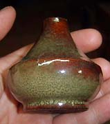 |
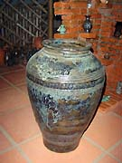 |
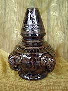 |
| Ash-glazed ware |
Iron blue ware |
Khmer antique |
| 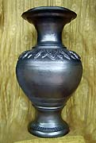 |
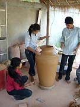 |
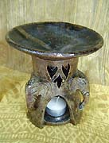 |
| contemporary Khmer ware |
Big size ceramics |
contemporary Khmer ware |
The goal of self-financing will ensure the sustainability and independence
of NCKCR - NCKCR is not a cursory project - it’s aim is the
long-term promotion of Khmer ceramics. This includes establishing
a Khmer potter’s library with books translated into Khmer
language, workshops, raw material furniture, research etc. In order
to reach this goal, NCKCR’s target is to be self-supporting
within two years,
NCKCR is in need of support for its work. You can find more information
on our website http://www.khmerceramics.com
or to make a financial contribution please contact us at support@khmerceramics.com.
Text & images © NCKCR.
More Articles |
{kind=link}
{kind=link}
{kind=link}
{kind=link}
{kind=link}
{kind=link}
{kind=link}
{kind=link}
{kind=link}
{kind=link}
{kind=link}
{kind=link}
{kind=link}
{kind=link}
{kind=link}
{kind=link}
{kind=link}
{kind=link}